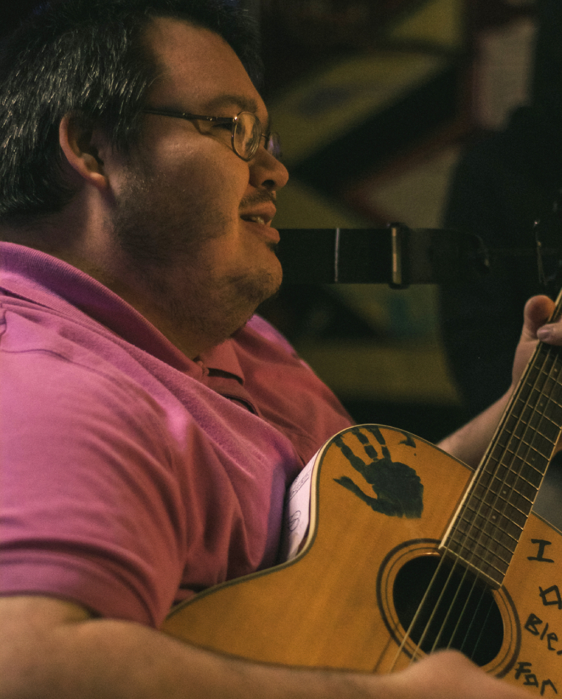

About Me

My name is Teaguer Chubak. I was born and raised in Salt Lake City, Utah, but I've spent much of my life traveling and looking for the next best place to live. The Midwest is my favorite.
My hobbies include: Photography, typing, writing and performing music, puzzles, and playing Minecraft. I've been heavily interested in computers since I was a child, teaching myself to type at the age of 4, and teaching myself HTML in junior high. My first website was a simple site dedicated to showing the lyrics to local bands from my city, thus combining my two favorite activities: computers and music.
When I'm not playing music or traveling the States, I'm usually laying in bed with a scifi book or watching a horror movie.
I'm now enrolled in school at BYU-I to get a degree, in hopes of finding a job that is autistic-friendly that would allow me to finally move out of my family's homes into my own place. That is my biggest goal in life.
Salt Lake City, Utah
Salt Lake is notorious for Mormon history, as well as its beautiful scenery and wildlife. To the right is a photo I took in downtown SLC.